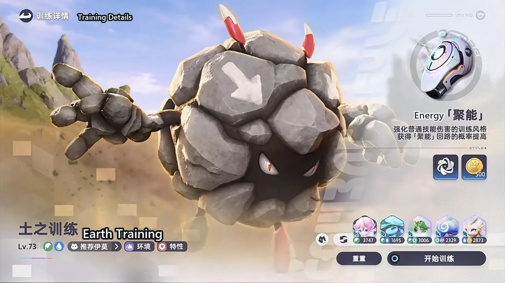
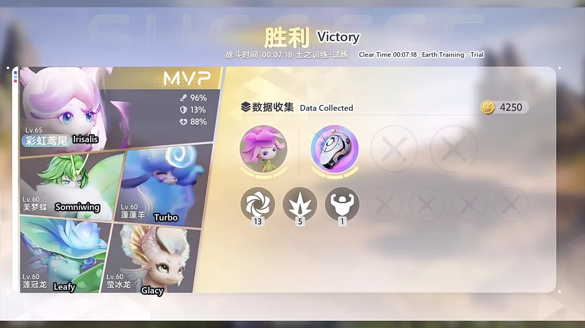
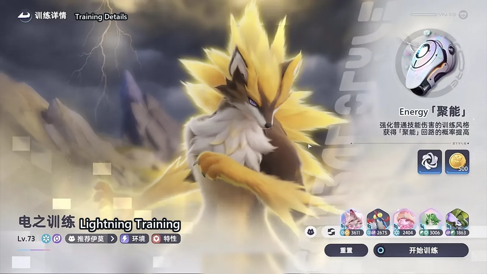
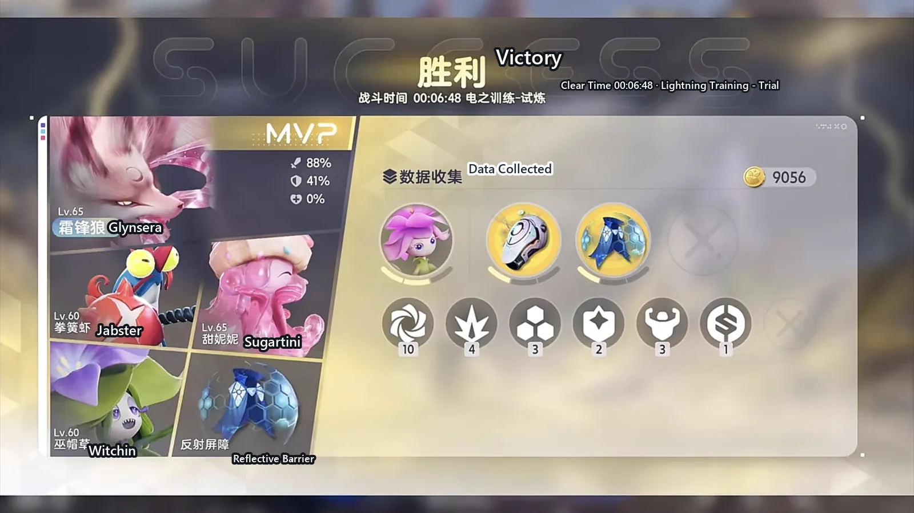
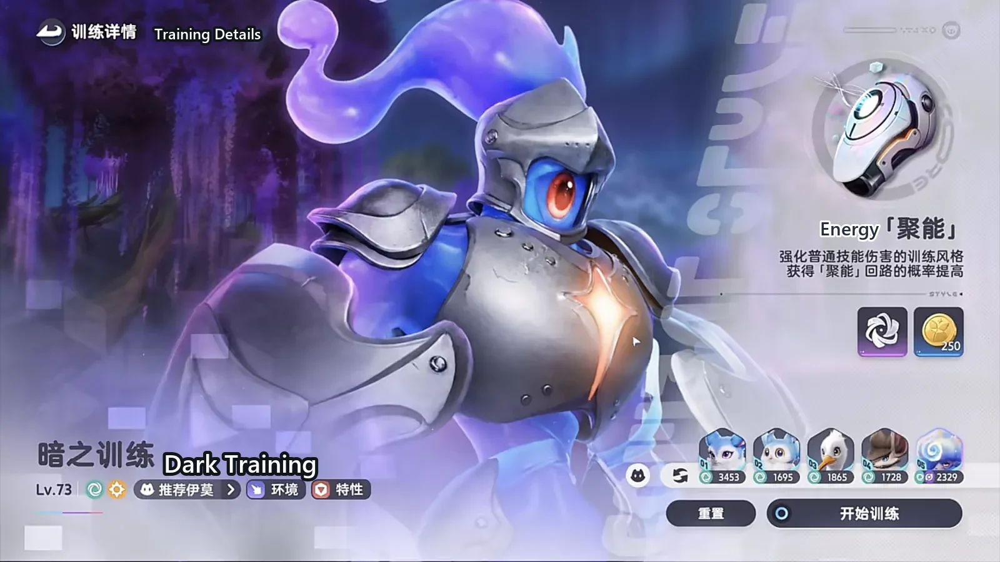
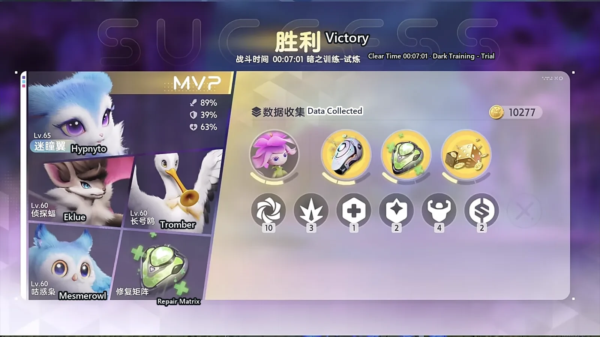

Home首页 / Guides攻略 / Aniimo's Three-Trial Holo-Battle Sim: Earth, Lightning and Dark in Seven Minutes《伊莫》新版本三系全息训练：7 分钟速通配队
Checked核对于 November 3, 20262026 年 11 月 3 日
Aniimo's Three-Trial Holo-Battle Sim: Earth, Lightning and Dark in Seven Minutes《伊莫》新版本三系全息训练：7 分钟速通配队
The season's three Lv.73 Holo-Battle Sim trials, one party each: who carries Earth, Lightning and Dark, what the other slots do, and which circuits to take.下半季三期 Lv.73 全息训练各带哪套阵容：土、电、暗三关的主 C 与配角分别是谁，各自负责什么，局内回路怎么拿。
The three Holo-Battle Sim trials added in the second half of the season do not gate you on stats. They gate you on the circuits. All three sit at Lv.73, and a party half made of level-sixties walks them anyway — as long as the line-up fits the trial and what you pick up inside fits the line-up.新版本下半季的三期全息训练，卡人的地方不在数值，在回路。三关的关卡等级都是 Lv.73，队里大半还是六十级出头，一样能过，前提是配队对得上、局内拿的东西也对得上。
Earth, Lightning and Dark: three parties, three different tempers. The one thing they share is Energy (聚能 on the in-game panel) — the training style these trials are built around. Right now a party is judged on whether it brings it.土、电、暗三关，三套阵容，脾气各不相同，能共用的只有一样：聚能。对，就是聚能王朝。现在判断一套阵容强不强，就看它带不带聚能。
Start with the easiest of the three.下面从最好打的那一关开始说。
Earth Training: Irisalis carries whoever you bring土之训练：彩虹鸢尾带谁都能过
The softest of the three. Almost no thought required.三关里最软的一关，几乎不用想事。
The party is Irisalis (Grass · DPS), Leafy (Grass/Water · Regen), Somniwing (Wind/Grass · Regen) and Turbo (Wind · Support). Take Energy on every circuit pick and keep taking it; there is no second decision to make.队伍是彩虹鸢尾（Irisalis，草 · 输出）、莲冠龙（Leafy，草 · 水 · 回能）、美梦蝶（Somniwing，风 · 草 · 回能）、蓬蓬羊（Turbo，风 · 辅助）。回路全程选聚能，局内一直点聚能就行，不用想第二件事。
Irisalis into this trial is close to overkill. She is the only damage dealer you have to look after; the other three all do the same job — keep her standing and keep her from being hit. Once Energy stacks up, the damage stops looking like it belongs to the same tier of party.彩虹鸢尾打这关基本是降维打击。她是队里唯一需要操心的输出，另外三只做的是同一件事 —— 让她站着、让她少挨打。聚能叠起来之后，伤害高得不像同一档次的队伍。

The fourth slot is the only place you can relax. Salabask (Grass/Water · Support) or Melloblum (Grass · Support) both work in place of Turbo, and the difference is not worth worrying about. Push it further and three units — Irisalis, Leafy and Somniwing — clear it anyway.四号位是唯一能松口的地方。蓬蓬羊换成苔木鱷（Salabask，草 · 水 · 辅助）或者魅乐薇（Melloblum，草 · 辅助）都行，换不换其实没太大差别。再退一步，只上三只 —— 彩虹鸢尾、莲冠龙、美梦蝶 —— 也照样打得穿。
If you are new and do not have a finished carry yet, Earth is the trial to build Irisalis on. She is strong, she is cheap to raise, and what you get is a Grass carry that holds its ground in most content.刚入坑、手上还没有成型输出的人，可以从这一关开始养彩虹鸢尾。她强度高，养成也简单，练出来是一只能在多数场合站得住的草系输出。

Lightning Training: Witchin gathers, Glynsera finishes电之训练：巫帽草聚怪，霜锋狼收尾
Lightning runs a tighter rhythm, but once the gather slot is in place it is a six-minute clear.电系这一关节奏更紧，但有了聚怪位之后，六分多钟就能打完。
The party is Glynsera (Ice · DPS), Jabster (Dark/Ice · Break), Sugartini (Ice · Support) and Somniwing, with Witchin (Dark/Grass · Regen) in the fifth slot. The circuit to take is the armguard from the Energy set.队伍是霜锋狼（Glynsera，冰 · 输出）、拳簧虾（Jabster，暗 · 冰 · 击破）、甜妮妮（Sugartini，冰 · 辅助）、美梦蝶，五号位补巫帽草（Witchin，暗 · 草 · 回能）。回路选聚能护臂。
Witchin is the clear switch. In the small-enemy waves, let her pull the scattered targets together first; one Glynsera skill then wipes the pack. Without that step the same skill leaves stragglers, and the time goes into chasing them.巫帽草是这套的清场开关。小怪阶段先让她把散着的东西聚起来，霜锋狼一个技能砸下去，一片就清完了。没有这一步，霜锋狼一个技能下去也清不干净，时间全耗在追着零散的目标跑上。
This party is not short on energy or on damage, so inside the run you can add healing and shields on top of Energy. It has no healing skill at all — the health bar is held up by circuits or not at all.这套不太缺回能，也不太缺伤害，所以局内除了聚能，可以再补一点加血和护盾。整支队伍没有回血技能，血线只能靠回路兜。

Glynsera is the core, and the party I would recommend building first this patch: the damage ceiling is high enough, and what it asks of the party is simple — pile the enemies up, then let it swing.霜锋狼是这套的核心，也是这个版本我最推荐练的一支队伍：输出上限够高，队伍对它的要求又简单 —— 把怪聚成一堆，然后让它打。

Dark Training: five Wind units in a chain, press whatever is lit暗之训练：五只风串成一条链，技能随便点
The recommendation here is Hypnyto (Wind · DPS). The party is Hypnyto, Mesmerowl (Wind · Regen), Tromber (Wind · Support) and Eklue (Wind · Support), with Turbo (Wind · Support) in the fifth slot. The circuits are Energy again.首推迷瞳翼（Hypnyto，风 · 输出）。队伍是迷瞳翼、咕惑枭（Mesmerowl，风 · 回能）、长号鸥（Tromber，风 · 辅助）、侦探蝠（Eklue，风 · 辅助），五号位补蓬蓬羊（Turbo，风 · 辅助）。回路还是聚能。
The fifth slot exists to cover Eklue during the small-enemy phase. Eklue is not good at clearing trash; the moment the enemies come in groups, Turbo goes in and Hypnyto keeps the main line.五号位在这里是替侦探蝠顶小怪阶段的。侦探蝠清杂兵不太好用，一到成群的小怪就换蓬蓬羊上去，主线交给迷瞳翼。
Dark puts almost no survival pressure on you. Pick skills without thinking, and spend the rest of the run's circuits on healing or more damage.暗之训练没有太大的生存压力，技能可以直接无脑选，剩下的局内回路留给回血或者其他伤害。

The whole party is Wind, and the regen and support slots hold Hypnyto up very steadily. It is the other party I would build first this patch: the line-up is direct, and once it is raised it works.整队清一色风属性，回能位和辅助位把迷瞳翼托得很稳。它也是当前版本我最推荐养的一支队伍，配队思路直接，练出来就能用。

Which trial to run first三关怎么排顺序
Earth is the easiest; take it first and get your hands back. Lightning wants you to practise the gather timing — whether Glynsera's burst lands in full comes down to Witchin's one pull. Dark is the least demanding of all, and pressing skills at random clears it, so it can go last.土之训练最好打，先拿它把手感找回来。电之训练要练一下聚怪的时机，霜锋狼的爆发能不能打满，全看巫帽草那一下。暗之训练最省心，技能随便点都能过，放在最后一把也行。
If you can only build one of the three carries first, build Irisalis. Her upgrade path is the shortest, Earth is the softest of the three trials, and the return arrives immediately. Glynsera and Hypnyto only pull ahead once they are finished, and both of those parties run on the same thing — Energy. The Lightning party also has to patch in healing, and the Dark party has to bring a trash-clearer.如果三只主 C 只能挑一只先练，挑彩虹鸢尾。她养成路线最短，土之训练又是三关里最软的一关，练起来马上有回报。霜锋狼和迷瞳翼的优势都在成型之后，两套都靠同一样东西 —— 聚能。电系那套还要额外补回血，暗系那套要额外带一个清小怪的人。
Any order works. Before you go in, decide what circuits this run is taking — that is worth more than a few extra levels.顺序怎么排都行，进去之前想清楚这一把要拿什么回路，比多练几级有用。
More guides相关攻略
- Aniimo's Strongest Water Team: Whirlbite Carries, and the Hardest Holo-Battle Sim Falls《伊莫》新版本最强水队：主 C 卷齿鲨，可轻松打通最高难度的全息训练 — A four-Aniimo Water party for the current patch: why the carry is Whirlbite and not Gachapus or Sherro, what the other three put down, the order to cast in, and the circuits to take in the hardest Holo-Battle Sim.一套新版本的四只水系阵容：主 C 为什么是卷齿鲨而不是扭蛋章鱼或星骑士，另外三只各负责什么，按什么顺序出手，以及最高难度全息训练里该拿哪些回路。
- Aniimo Tier List: The 19 Creatures to Build First《伊莫》强度巅峰榜：几百小时之后，新手先练这 19 只 — A personal tier list of 19 Aniimo, grouped by the job each one does — damage, break, healing and support, energy regen — with every element and role checked against the game's own records and the ranking left as my own.一份个人向的强度榜单，按输出、击破、治疗辅助、回能分成四组。每只都逐一对过游戏里的属性与定位，哪一段是能查的、哪一段是我自己的判断，文中分开写。